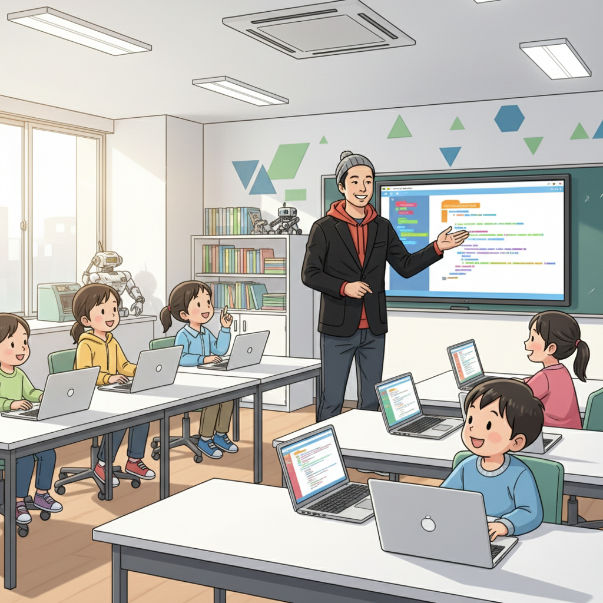
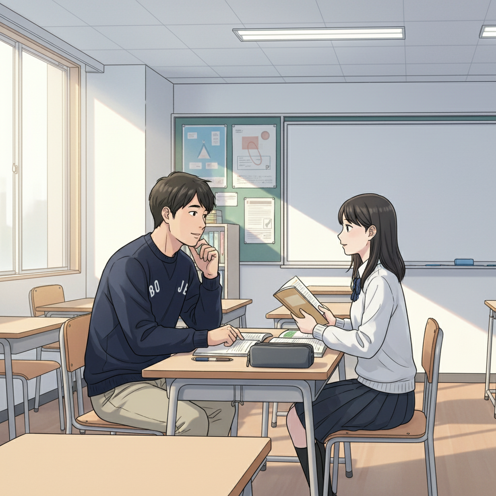
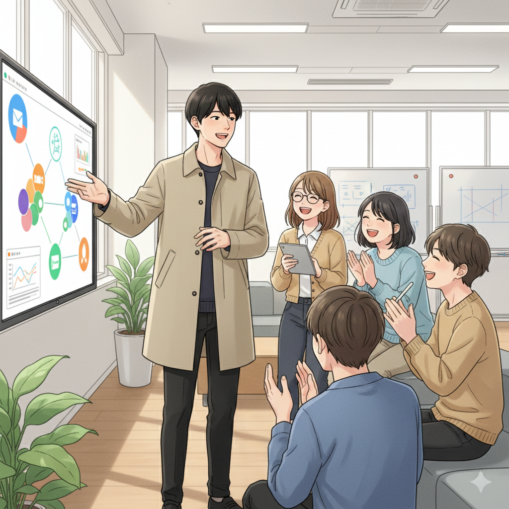

「ゲームばかり」と言われた僕が、15歳で起業した理由（学生起業家）
「またゲームしてるの？」小さい頃から、親や先生によく言われた言葉です。ADHDの僕は、一度ハマると周りが見えなくなるほど集中してしまう。でも、その集中力こそが、僕の最大の武器だったんです。
高校生の時、if塾で塾頭に出会いました。彼は僕の特性を『才能』だと言ってくれたんです。プログラミングに興味があった僕は、塾でITスキルを学び始めました。すると、ゲームで培った集中力と論理的思考が、プログラミング学習に驚くほど役立ったんです。
そして15歳、個人事業主として起業。最初は小さなWebサイト制作からスタートしましたが、徐々に規模を拡大。今では、企業のシステム開発なども手がけています。僕のADHDは、決して『障害』なんかじゃありません。むしろ、僕にしかない『才能』なんです。
発達障害は「才能の原石」。それを磨く場所が、if塾（塾頭）

if塾を立ち上げたのは、発達特性を持つ子どもたちの可能性を、誰よりも信じているからです。多くの子どもたちは、学校や社会の中で『できないこと』ばかり指摘され、自信を失ってしまいます。でも、彼らは他の人にはない、素晴らしい才能を持っているんです。
学生起業家も、最初はただの『ゲーム好き』な少年でした。でも、彼の集中力と論理的思考は、プログラミングの才能を開花させる原石だったんです。if塾では、一人ひとりの特性を見抜き、その才能を最大限に伸ばすためのサポートをしています。発達障害 プログラミングとの相性は抜群で、集中力を活かして驚くほどのスピードでスキルを習得する子もいます。
ADHD ゲーム 集中力は、使い方次第で大きな力になります。if塾では、ゲームやプログラミングだけでなく、eスポーツ、デザイン、音楽など、様々な分野で才能を開花させています。
「自分には無理」そう思っていた僕が、大学進学できた理由（塾長）

僕も、中学時代は特別支援学級に通っていました。ADHDとASDの診断を受け、周りの子たちと同じようにできないことがたくさんありました。将来のことなんて、全く考えられなかった。でも、高校で塾頭に出会い、人生が変わりました。
塾頭は、僕の特性を理解し、得意なことを伸ばすためのサポートをしてくれました。小さな成功体験を積み重ねることで、少しずつ自信を取り戻していきました。そして、大学進学という目標を持つことができたんです。今では、if塾で後輩たちのサポートをしています。僕自身の経験を活かして、彼らの不安や悩みに寄り添い、一歩踏み出す勇気を与えたいと思っています。
if塾には、同じような悩みを抱える仲間がたくさんいます。お互いを支え合い、励まし合いながら、自分らしい成長の形を見つけていく。そんな温かい場所なんです。
学生起業という選択肢。自分の「好き」を仕事にする（学生起業家）

起業って、なんだか難しそうに聞こえるかもしれません。でも、実はそんなことないんです。自分の『好き』を追求し、それを誰かの役に立てることができれば、それは立派なビジネスになります。
僕の場合、それがプログラミングでした。学生起業 ITの世界は、チャンスに溢れています。if塾で出会った仲間たちと協力しながら、新しいサービスを開発したり、イベントを企画したり…。毎日が刺激的です。
もし、あなたが今、将来に不安を感じているなら、ぜひif塾に来てみてください。きっと、あなただけの才能が見つかるはずです。そして、その才能を活かして、自分らしいキャリアを築いていきましょう。
🎯 興味を持っていただいた方へ
if塾では、発達特性を持つ子どもたちの「好き」を「才能」に変える教育を行っています。現在の記事内容と実際の活動に大きなズレはありませんが、詳細については直接お問い合わせください。
📌 記事について
この記事は、塾頭による完全自動化への挑戦としてAIが自動生成しています。将来的には塾頭が執筆しているような記事になることを目指しており、現時点では事実と異なる内容が含まれる可能性があります。最新の正確な情報については、お問い合わせフォームよりご確認ください。
🤖 Generated with AI - if塾のブログ自動化プロジェクト